I am currently a Phd student in Zhejiang University and about to graduate at 2026.06.
Reviewr Experience:
CVPR, NeurIPS, SIGGRAPH Asia, ICML, ECCV, ICCV, ACM MM, ICLR, AISTATS, AAAI, ICPR
近期研究： 自回归+Diffusion的超长视频生成与加速；理解与生成的多模态统一模型；DiT架构的相机运镜与转场可控的视频生成模型；浙大华为联合开源,持续维护首个动态场景、Metric Scale相机标注的高质量视频数据集RealCam-Vid.近期在研究FlashAttention，注意力稀疏化（CUDA底层实现）与并行推理的相关技术。
历史研究领域:
1. 视频与图像可控生成/编辑。 掌握主流图像/视频生成方法的多分辨率训练的工程经验以及adapter、lora、梯度反传、噪声反演等多种可控方法。
2. Transformer架构扩散模型研究：在Sora发布前，已有长时间的转向Transformer架构扩散模型的研究经历。掌握U-ViT、DiT、MaskDiT、离散的VQDiT、自回归的MaskGiT、LFQ压缩、VAE压缩、TikTok压缩等研究经历。熟练掌握RMSNorm, QK Norm，双向Attention, ZeroAdaLn, GemmaMlp, 噪声策略，eps/x0/v-prediction等关键技巧，有丰富的训练Pixart， DiT的工程经验。
3. 位置编码，尺度外推的相关研究：在RoPE未广泛应用到生成领域时，独立实现2D RoPE应用于DiT的图像生成，复现Training-free的尺度外推技术例如NTK RoPE, ReRoPE, Leaky ReRoPE等。
4. 加速：掌握通用蒸馏剪枝技术及diffusion领域特有的加速技术，在官方代码未开源前独立实现w-embedding CFG蒸馏，Consistency Model，LCM，PCM，UFOGen，DMD等1步/少步生成加速方法，参与并指导学弟发表加速工作Target-Driven Distillation，应用于小红书，huggingface模型已被下载5.35k次。
5. 3D生成：具有基于MVDream,Wonder3D，Zero123等diffusion-based的多视角生成、MeshGPT，LRM等One-step Feed-Forward的原生3D基础模型的较长时间的研究经历。
6. 强化学习：具有使用DPO、PPO对DiT模型进行不同时间步自动化最优CFG探索的研究经历。
7. 自动驾驶BEV：具有自动驾驶场景的4D高斯生成的少部分研究经历和BEV生成的研究经历。
Contributed to Open Source GitHub Repositories


Publications [Full List]
(* equal contribution, # corresponding author or project leader
author)

Opensourced Extremely-High-Quality Video Dataset
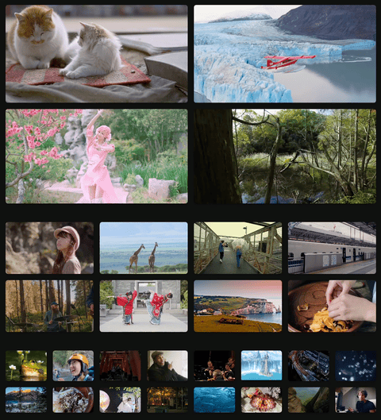
Tiger200K: Manually Curated High Visual Quality Video Datasets from UGC Platform
Xianpan Zhou, Teng Li, Guangcong Zheng

Long Video Generation
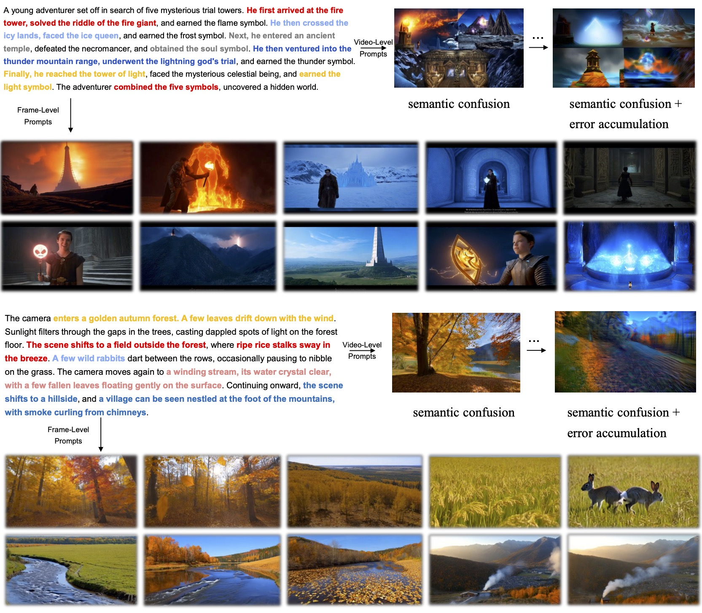
Frame-Level Captions for Long Video Generation with Complex Multi Scenes
Guangcong Zheng*, Jianlong Yuan#, Bo Wang, Haoyang Huang, Guoqing Ma, Nan Duan

Controllable Video Generation
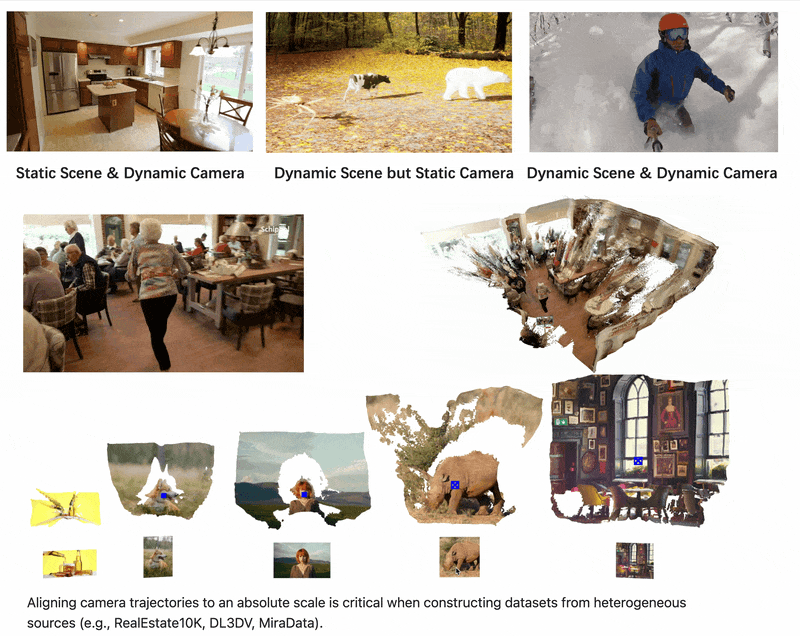
RealCam-Vid: Large-scale High Quality Video Dataset With Real-World Camera Movement
Guangcong Zheng*, Teng Li*, Xianpan Zhou, Xi Li#
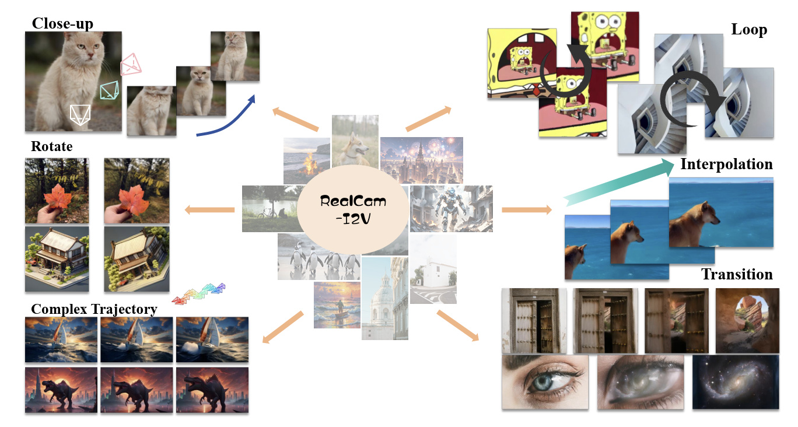
RealCam-I2V: Real-World Image-to-Video Generation with Interactive Complex Camera Control
Teng Li*, Guangcong Zheng*, Rui Jiang, Shuigenzhan, Tao Wu, Yehao Lu, Yining Lin, Xi Li#
arXiv preprint: 2502.10059
Project Page Paper
(arXiv)
Codes

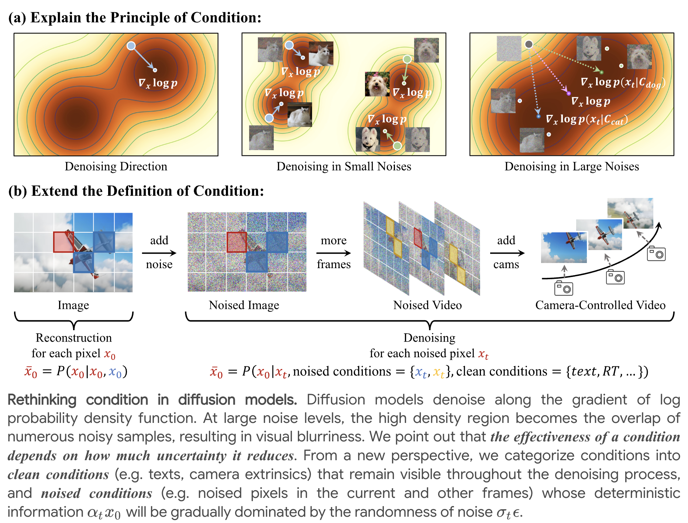
CamI2V: Camera-Controlled Image-to-Video Diffusion Model
Guangcong Zheng*, Teng Li*, Rui Jiang, Yehao Lu, Tao Wu, Xi Li#
arXiv preprint: 2410.15957
Project Page Paper
(arXiv)
Codes

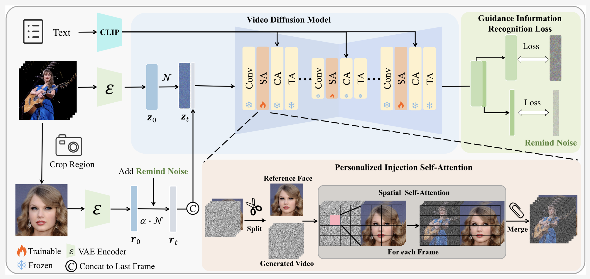
VideoMaker: Zero-shot Customized Video Generation with the Inherent Force of Video Diffusion Models
Tao Wu, Yong Zhang, Xiaodong Cun, Zhongang Qi, Junfu Pu, Huanzhang Dou, Guangcong Zheng, Ying Shan, Xi Li#
https://arxiv.org/abs/2412.19645
Project Page Paper
(arXiv)
Codes

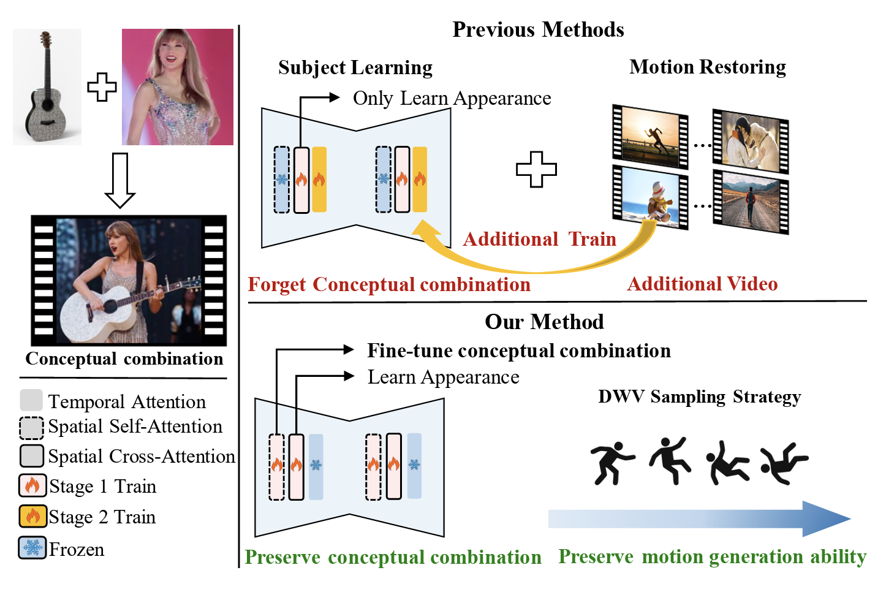
CustomCrafter: Customized Video Generation with Preserving Motion and Concept Composition Abilities
Tao Wu, Yong Zhang, Xintao Wang, Xianpan Zhou, Guangcong Zheng*, Zhongang Qi, Ying Shan, Xi Li#
arXiv preprint: 2408.13239
AAAI, 2025.
Project Page Paper
(arXiv)
Codes

Controllable Image Generation
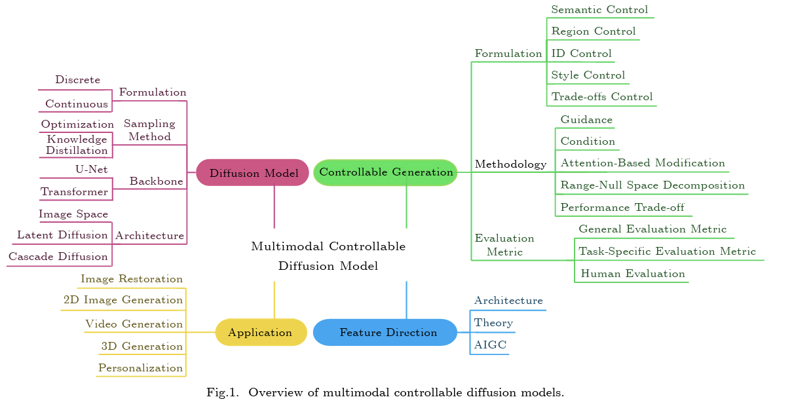
A survey of multimodal controllable diffusion models
Rui Jiang*, Guang-Cong Zheng*, Teng Li, Tian-Rui Yang, Jing-Dong Wang, Xi Li#
JCST, CCF B, 2024.
Energy-Guided Optimization for Personalized Image Editing with Pretrained Text-to-Image Diffusion Models
Rui Jiang, Xinghe Fu, Guangcong Zheng, Teng Li, Taiping Yao, Xi Li#
AAAI, 2025.
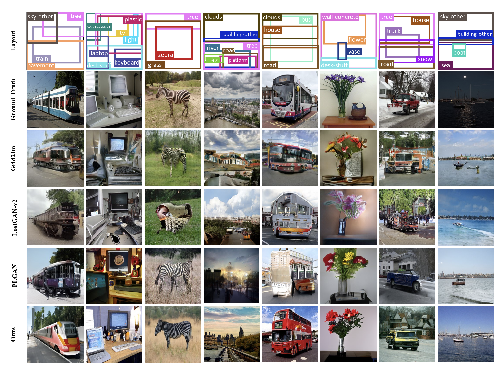
Layoutdiffusion: Controllable diffusion model for layout-to-image generation
Guangcong Zheng*, Xianpan Zhou*, Xuewei Li, Zhongang Qi, Ying Shan, Xi Li#
arXiv preprint: 2303.17189
CVPR, 2023.
Project Page Paper
(arXiv)
Codes

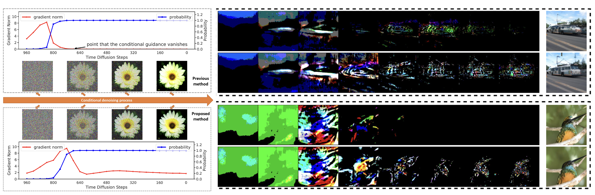
Entropy-driven Sampling and Training Scheme for Conditional Diffusion Generation
Guangcong Zheng*, Shengming Li*, Hui Wang, Taiping Yao, Yang Chen, Shoudong Ding, Xi Li#
ECCV, 2022.
Project Page Paper
(arXiv)
Codes

Incremental Learning + Scene Graph Generation
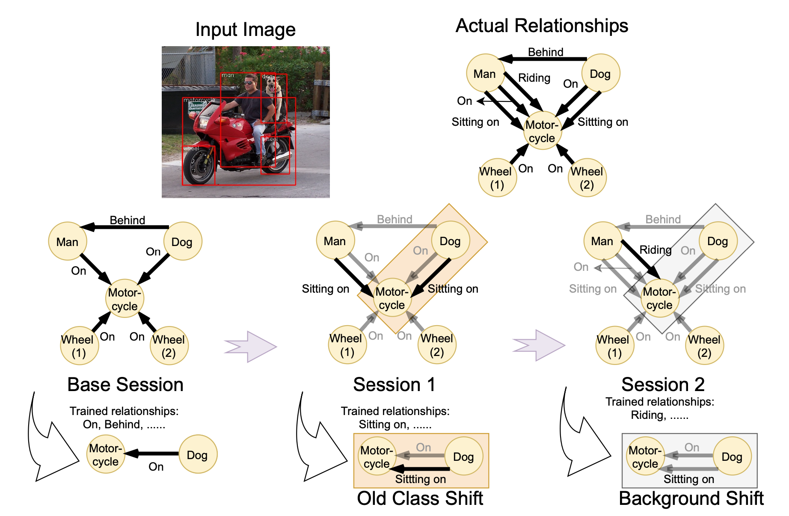
Relationship-Incremental Scene Graph Generation by a Divide-and-Conquer Pipeline with Feature Adapter
Xuewei Li, Guangcong Zheng, Yunlong Yu, Naye Ji, Xi Li#
TIP 2024.
Bird's Eyes View
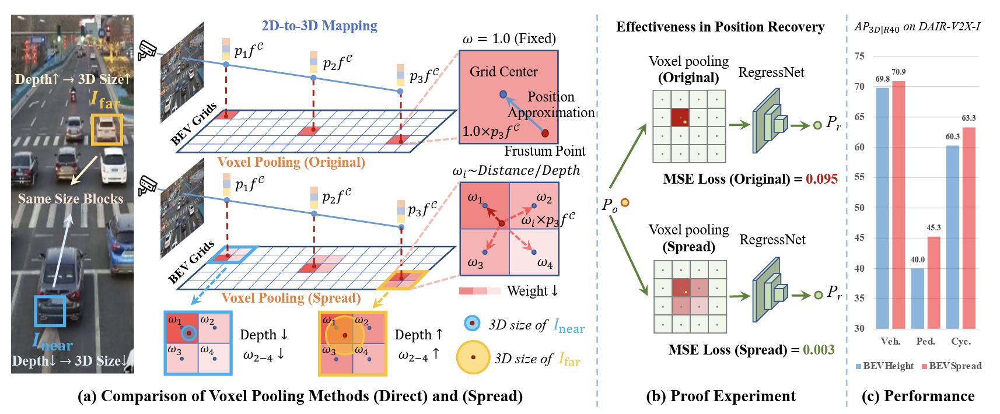
BEVSpread: Spread Voxel Pooling for Bird's-Eye-View Representation in Vision-based Roadside 3D Object Detection
Wenjie Wang, Yehao Lu, Guangcong Zheng, Shuigen Zhan, Xiaoqing Ye, Zichang Tan, Jingdong Wang, Gaoang Wang, Xi Li#
CVPR 2024.